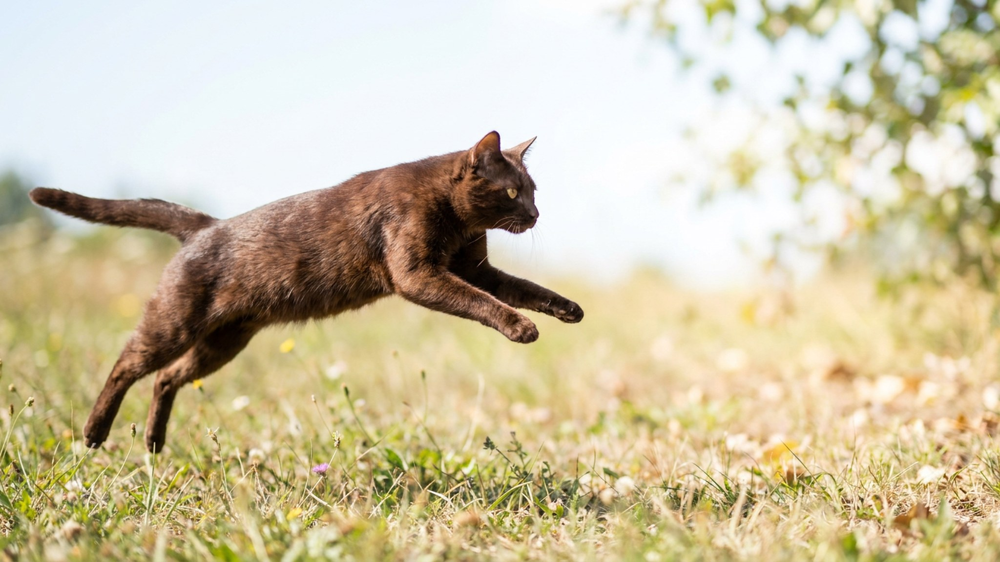

Стоит выйти на кухню — гавана браун уже там. Зашли в ванную — она ждёт под дверью. Это не навязчивость: порода буквально создана для жизни рядом с человеком. Гавана браун — редкая порода с характером собаки-компаньона в кошачьем теле, и если вы часто бываете дома одни и хотите живое общество, это может быть идеальный выбор. Ниже — характер, поведение и то, что нужно знать до того, как взять такого питомца.
🐾 Здоровье питомца под контролем
AI-ветеринар, дневник здоровья и персональные советы для вашего питомца — установите AnimaLife бесплатно.
Гавана браун — одна из немногих пород, у которых привязанность к хозяину носит устойчивый, предсказуемый характер. Кошка выбирает главного человека и следует за ним по квартире весь день. При этом она не мяукает без повода — скорее тихо сидит рядом и наблюдает за тем, что вы делаете.
Гавана браун общается голосом — мягко, коротко, по делу. Она скажет вам, что миска пуста, что дверь закрыта или что уже пора на диван. Это не фоновый шум, а реальный диалог: кошка реагирует на интонацию и часто отвечает, если с ней разговаривают.
Важно: если гавана браун вдруг стала молчать или, напротив, мяукать намного больше обычного — это заметное изменение поведения, о котором стоит рассказать ветеринару на ближайшем визите.
Гавана браун плохо переносит длительное одиночество. Порода исторически выводилась как компаньон, и её психология устроена так, что без ежедневного человеческого контакта кошка начинает скучать по-настоящему — это проявляется в навязчивом поведении, отказе от игр или изменении привычек.
🐾 Первая помощь — всегда под рукой
AnimaLife подскажет, что делать в тревожной ситуации с питомцем ещё до визита к врачу. Откройте в один тап.
🐾 Понравился разбор?
Подпишитесь на канал — каждый день разбираем по одному тревожному симптому у кошек и собак: что в пределах нормы, а когда пора к врачу. Подпишитесь, чтобы не пропустить разбор, который может спасти здоровье вашего питомца.
Гавана браун — порода с высоким уровнем интеллекта. Она быстро запоминает распорядок дня, учится открывать двери и шкафы, отслеживает, куда вы убираете вещи. Это плюс для обучения и минус, если вы хотите что-то скрыть от питомца.
Если вы готовы к кошке, которая будет частью каждого вашего дня — гавана браун ответит такой же преданностью. Порода не для тех, кто хочет независимого питомца «для красоты».
Материал носит информационный характер и не заменяет очную консультацию ветеринара.